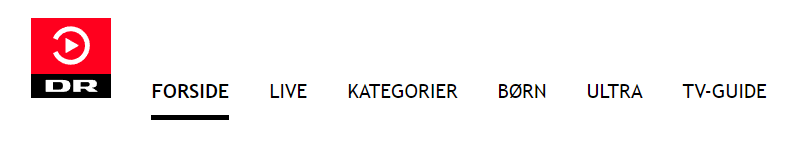
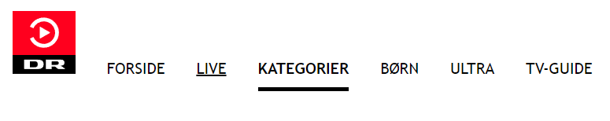
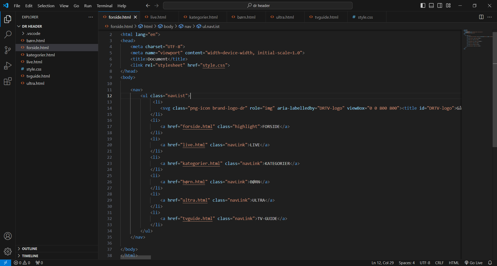
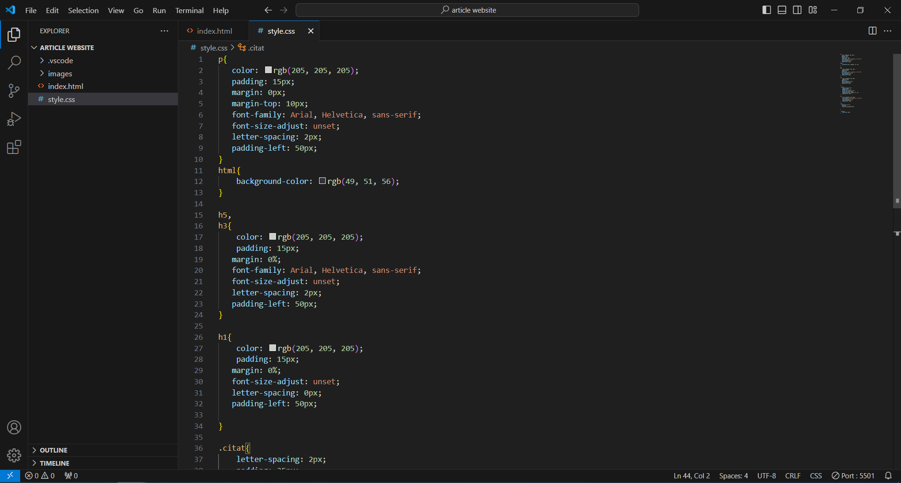

DR Header
I denne opgave fik vi til opgave at lave navigations listen i headeren på dr.dk og at få resultatet så tæt på den originalle version som muligt, med funktionalitet af at skifte mellem titler. Til det fik vi lært noget om hvordan man kan blande list elementer i html sammen med 'display' og 'justify content' i CSS til at få anchor elementer til at stå på række. Samt blev vi også lært op i de forskellige 'states' links kan være i og hvordan man ændre deres udseende i CSS med 'selectors'.
Jeg har i min version benyttet display:flex; sammen med justify-content: center; for at få teksten til at stå i midten af skærmen. Jeg har så leget rundt med de forskellige selectors for de forskellige states, ændret skrift type, farve og størrelse. Titlerne har i koden fået classen 'navLink' hvor den valgte titel fik classen 'highlight'. Highlight classen, i koden, sidder på det link der passer med siden, så den følger med når man trykker rundt. Titlerne under navLink er dem som man ikke er inde på, og er derfor små.
Når man tager musen hen over titlen, kommer der en lille underline, ved hjælp af 'text.decoration: underline;' for at markere at man nu kan trykke på den. På elemented med classen highlight er den sorte, tykke linje i stedet en 'border-bottom' som er gjort tykkere, hvor text-decoration er sat til none, som gør at den lille underline ikke kommer frem når musen kører hen over den. Til sidst indsatte jeg en svg på 64px-64px med DRs logo. Samt brugte jeg 'align-items: flex-end;' for at få titlerne til at stå i bunden. Resultat og kode kan ses nedenfor:
   Jeg har lært om hvordan man skriver og anvender links forskellige states og hvordan man styler dem.
Samtidig havde jeg også lidt svært, til at starte med, ved lige at finde ud af hvordan jeg lige skulle gribe opgaven an, i forhold til at få de forskellige titler til at blive fed når man trykker på dem, men efter det faldt resten ret nemt sammen.